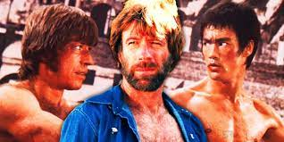

“Chuck Norris tem um grande respeito pela vida humana, a não ser que essa cruze seu caminho.”
Chuck Norris não dorme. Ele espera.
Chuck Norris não lê livros, ele os encara até conseguir toda a informação que precisa.
Chuck Norris pediu um Big Mac no Bob´s. Ele foi atendido.
Chuck Norris só passa as noites com a luz acesa. Não, Chuck Norris não tem medo do escuro, mas a recíproca não é verdadeira.
Os dinossauros olharam torto para Chuck Norris uma vez. Uma vez.
Quando o Bicho Papão vai dormir, ele deixa a luz acesa com medo de Chuck Norris.
Chuck Norris jogou roleta russa com um revólver totalmente carregado e ganhou.
Algumas pessoas usam uniforme do Superman. Já o Superman usa uniforme de Chuck Norris.
